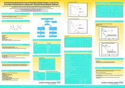
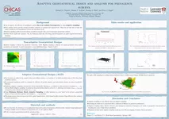
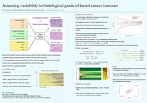
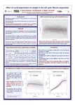
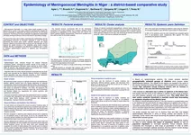
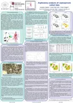
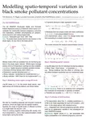
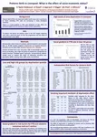
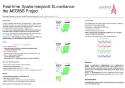
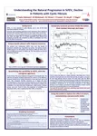

Research Posters Rebeca Ramis, Peter Diggle A Comparison of INLA and MCMC for the Estimation of Smoothed Risk Maps in Epidemiology Peter Diggle  A Randomised Double-blind Trial of Taurolidine-citrate Catheter Locks for the Prevention of Bacteraemia in Cuffed and Tunnelled Haemodialysis Catheters Lisha Deng, Peter Diggle A Study of Association of Workload with Infection of Ventilator-assisted Pneumonia on the Intensive Care Unit Tom Keegan Acute Response to Sarin in Veterans Tested at Porton Down Peter Diggle Adaptive Geostatistical Design Michael Chipeta  Adaptive Geostatistical Design and Analysis for Prevalence Surveys Tom Fanshawe  Assessing Variability in Histological Grade of Breast Cancer Tumours Peter Diggle, Ben Taylor, Barry Rowlingson Bayesian Parameter Estimation for the log-Gaussian Cox Process Ziyu Zheng, Barry Rowlingson, Ben Taylor Bayesian Spatiotemporal Modelling of Survival Outcomes in Long-Term Studies Kirk Allen, Peter Diggle Cardiovascular Disease (CVD) Modelling Project Gerwyn Green, Peter Diggle Development of α-synuclein as a Potential Molecular Marker for Parkinson's Disease Ivonne Solis-Trapala Discussing Early Phase Trials: Evaluation of a Cancer Research UK Educational Training Program Peter Diggle  Effect of Social Deprivation on Weight in the UK Cystic Fibrosis Population Peter Diggle Effect of Socio-economic Status on Lung Function in the UK Cystic Fibrosis Population Lydiane Agier  Epidemiology of Meningococcal Meningitis in Niger : a District-based Comparative Study Nicolas Capian, Peter Diggle  Exploratory Analysis of Leptospirosis Cohort Data Benjamin Amoah Geospatial Modelling of the Effect of Malaria on Height of Children 0-5 in Africa Emanuele Giorgi, Peter Diggle Impact of Geostatistical Methods on Determining Boundaries of Hotspots of Malaria Inês Sousa Impulsivity Versus Apathy in Parkinson's Disease: a Comparison of Clinical, Psychiatric and Behavioural Correlates Hayley J Lowther-Payne, Anastasia Ushakova, Fiona Lobban, Rhiannon Edge Lessons From The COVID-19 Pandemic: Access to Mental Health Services for LGBT+ People in Lancashire and South Cumbria Inês Sousa, Peter Diggle Microalbuminuria and Reduced Glomerular Filtration Rate are Independent Factors for Mortality in People with Diabetes Mellitus Barry Rowlingson, Peter Diggle Modelling Malaria with Spatial Statistics and Satellite Data Tom Fanshawe, Peter Diggle  Modelling Spatio-temporal Variation in Black Smoke Pollutant Concentrations Ivonne Solis-Trapala Omissions and Misunderstandings in Phase 1 Trial Discussions Alison Hale, Barry Rowlingson, Emanuele Giorgio, Peter Diggle One Health e-Surveillance for Early Detection of Gastrointestinal Disease Outbreaks Irene Kaimi, Peter Diggle Partial Likelihood Analysis for Spatio-temporal Point Process Data Peter Diggle  Preterm Birth in Liverpool: What is the Effect of Socio-economic Status? Peter Diggle  Real-time Spatio-temporal Surveillance: the AEGISS Project Tom Keegan Relative Deprivation Between Neighbouring wards is Predictive of Coronary Heart Disease Mortality After Adjustment for Absolute Deprivation of Wards Rhiannon Edge, Tom Keegan, Barry Rowlingson Seasonal Influenza - A Simulation Model Based on a Social Network Emanuele Giorgi, Peter Diggle Spatio-temporal Changes in Childhood Malaria in Malawi Ivonne Solis-Trapala, Peter Diggle Statistical Modelling of Development of Executive Function in Early Childhood Peter Diggle Survival and Serious Long Term Peritoneal Complications in Peritoneal Dialysis Patients Inês Sousa, Peter Diggle The Use of Estimated Glomerular Filtration Rate and Albumin Creatinine Ratio to Predict Decline in Renal Function in People with Diabetes Michelle Stanton, Lydiane Agier, Barry Rowlingson, Peter Diggle Towards Real-time Spatiotemporal Monitoring and Forecasting of Meningitis Incidence in sub-Saharan Africa Ivonne Solis-Trapala UK Oncologists' Experiences with and Attitudes Towards non-NHS-funded Cancer Drugs: Results from an On-line Survey Peter Diggle  Understanding the Natural Progression in %FEV1 Decline in Patients with Cystic Fibrosis Fran Biggin Using Health Informatics to Improve Neurological Care